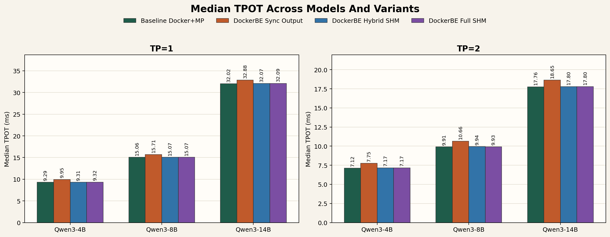
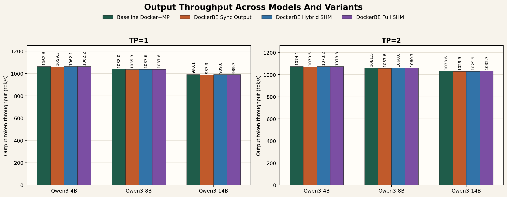
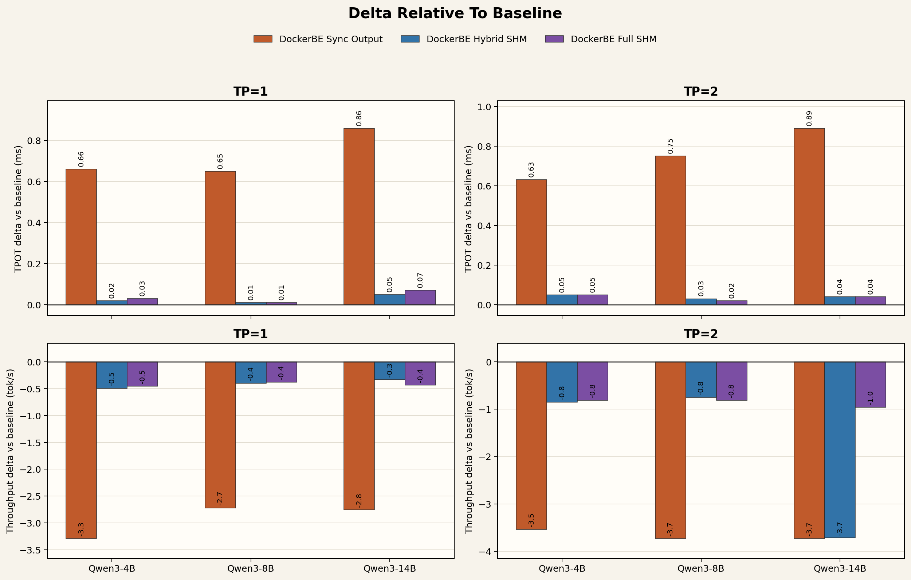

Experiment 1: Multi-Model Sweep Report
This report summarizes the 3-model, 4-variant rerun of the Docker executor experiment using the first 1000 ShareGPT prompts on GPUs 1,2.
The core pattern is stable across model sizes: disabling async output copy is the only optimization that causes a consistent regression, while the hybrid-SHM and full-SHM paths both stay essentially at baseline.
Key Findings
+0.72 ms TPOT at TP=1 and +0.76 ms at TP=2.
0.02 ms at TP=1 and 0.01 ms at TP=2.
+0.04 ms TPOT delta at TP=1 and +0.04 ms at TP=2.
700/300 successful/failed requests; one 14B hybrid TP=2 run landed at 699/301, which is still very close.
Settings And Ablations
The four variants are intentionally close to each other so the effect of each optimization is easy to isolate. The baseline is the reference implementation, and the three DockerBE rows add or remove one optimization at a time.
Baseline Docker+MP
vLLM runs fully inside one Docker container and uses the standard multiprocess executor (mp). This is the control setup: no DockerDistributedExecutor RPC path is involved.
- Server placement: inside Docker
- Executor: MultiprocExecutor (
--distributed-executor-backend mp) - What it measures: the reference latency/throughput we want DockerBE to match
DockerBE Sync Output
This keeps the Docker executor and SHM transport enabled, but removes the async output-copy optimization. It is the direct ablation for the root cause we found earlier.
- Server placement: host process using
DockerDistributedExecutor - Broadcast path: SHM
- Worker response path: SHM
- Output handling: synchronous (
VLLM_DOCKER_ASYNC_OUTPUT_COPY=0) - What it ablates: async output copy
DockerBE Hybrid SHM
This keeps async output copy enabled, but switches worker responses back to TCP while leaving the host-to-worker broadcast on SHM.
- Server placement: host process using
DockerDistributedExecutor - Broadcast path: SHM
- Worker response path: TCP
- Output handling: asynchronous (
VLLM_DOCKER_ASYNC_OUTPUT_COPY=1) - What it ablates: response-side SHM only
DockerBE Full SHM
This is the optimized target. It keeps the Docker executor, async output copy, SHM broadcast, and SHM worker responses all enabled at once.
- Server placement: host process using
DockerDistributedExecutor - Broadcast path: SHM
- Worker response path: SHM
- Output handling: asynchronous (
VLLM_DOCKER_ASYNC_OUTPUT_COPY=1) - What it represents: the final optimized DockerBE path
Glossary
This experiment mixes executor choices, transport choices, and output-handling choices. The short definitions below explain the terms used in the tables and plots.
The worker copies generation outputs onto a separate path so the main execution path does not block on handing results back to the host. In this experiment, removing it causes the clear latency regression.
The worker returns outputs on the same critical path without the async handoff. That makes response delivery wait longer and shows up as higher TPOT.
The host-to-worker RPC broadcast MessageQueue uses shared memory instead of a TCP or socket transport. This reduces messaging overhead for control traffic sent from the host to all workers.
Each worker returns its RPC response to the host through a shared-memory MessageQueue rather than a TCP path. The ablation shows that this change alone has only a very small effect in this setup.
A mixed transport mode: SHM for broadcast from host to workers, but TCP for worker responses back to the host.
SHM in both directions: broadcast traffic and worker response traffic both use shared memory.
Median TPOT
Lower is better. The sync-output ablation sits visibly above the other three variants across all three models. Hybrid-SHM and full-SHM almost overlap baseline.

Output Throughput
Higher is better. Throughput differences are small overall, but the same pattern remains: sync-output is consistently the weakest variant, while hybrid-SHM and full-SHM stay near baseline.

Delta Relative To Baseline
This view makes the ablations easier to compare directly. Positive TPOT deltas are regressions; negative throughput deltas are regressions. The response-SHM difference remains close to zero.

Per-Run Metrics
The table below is generated directly from the bench outputs. TPOT delta and tok/s delta are relative to the matching baseline for the same model and TP size.
| Model | TP | Variant | Succ/Fail | Median TPOT | TPOT delta | Output tok/s | tok/s delta | Median TTFT | Bench file |
|---|---|---|---|---|---|---|---|---|---|
| Qwen3-4B | 1 | Baseline Docker+MP | 700/300 | 9.29 | +0.00 | 1062.63 | +0.00 | 31.39 | baseline/qwen3_4b/3_docker_mp_tp1_bench.txt |
| Qwen3-4B | 1 | DockerBE Sync Output | 700/300 | 9.95 | +0.66 | 1059.34 | -3.29 | 33.16 | dockerbe_sync_output/qwen3_4b/5_host_dockerbe_tp1_bench.txt |
| Qwen3-4B | 1 | DockerBE Hybrid SHM | 700/300 | 9.31 | +0.02 | 1062.14 | -0.49 | 32.01 | dockerbe_hybrid_shm/qwen3_4b/5_host_dockerbe_tp1_bench.txt |
| Qwen3-4B | 1 | DockerBE Full SHM | 700/300 | 9.32 | +0.03 | 1062.18 | -0.45 | 31.17 | dockerbe_full_shm/qwen3_4b/5_host_dockerbe_tp1_bench.txt |
| Qwen3-4B | 2 | Baseline Docker+MP | 700/300 | 7.12 | +0.00 | 1074.09 | +0.00 | 25.65 | baseline/qwen3_4b/4_docker_mp_tp2_bench.txt |
| Qwen3-4B | 2 | DockerBE Sync Output | 700/300 | 7.75 | +0.63 | 1070.55 | -3.54 | 27.49 | dockerbe_sync_output/qwen3_4b/6_host_dockerbe_tp2_bench.txt |
| Qwen3-4B | 2 | DockerBE Hybrid SHM | 700/300 | 7.17 | +0.05 | 1073.24 | -0.85 | 25.83 | dockerbe_hybrid_shm/qwen3_4b/6_host_dockerbe_tp2_bench.txt |
| Qwen3-4B | 2 | DockerBE Full SHM | 700/300 | 7.17 | +0.05 | 1073.28 | -0.81 | 25.66 | dockerbe_full_shm/qwen3_4b/6_host_dockerbe_tp2_bench.txt |
| Qwen3-8B | 1 | Baseline Docker+MP | 700/300 | 15.06 | +0.00 | 1037.99 | +0.00 | 48.81 | baseline/qwen3_8b/3_docker_mp_tp1_bench.txt |
| Qwen3-8B | 1 | DockerBE Sync Output | 700/300 | 15.71 | +0.65 | 1035.27 | -2.72 | 50.46 | dockerbe_sync_output/qwen3_8b/5_host_dockerbe_tp1_bench.txt |
| Qwen3-8B | 1 | DockerBE Hybrid SHM | 700/300 | 15.07 | +0.01 | 1037.59 | -0.40 | 48.10 | dockerbe_hybrid_shm/qwen3_8b/5_host_dockerbe_tp1_bench.txt |
| Qwen3-8B | 1 | DockerBE Full SHM | 700/300 | 15.07 | +0.01 | 1037.61 | -0.38 | 48.45 | dockerbe_full_shm/qwen3_8b/5_host_dockerbe_tp1_bench.txt |
| Qwen3-8B | 2 | Baseline Docker+MP | 700/300 | 9.91 | +0.00 | 1061.53 | +0.00 | 34.84 | baseline/qwen3_8b/4_docker_mp_tp2_bench.txt |
| Qwen3-8B | 2 | DockerBE Sync Output | 700/300 | 10.66 | +0.75 | 1057.80 | -3.73 | 37.30 | dockerbe_sync_output/qwen3_8b/6_host_dockerbe_tp2_bench.txt |
| Qwen3-8B | 2 | DockerBE Hybrid SHM | 700/300 | 9.94 | +0.03 | 1060.78 | -0.75 | 34.99 | dockerbe_hybrid_shm/qwen3_8b/6_host_dockerbe_tp2_bench.txt |
| Qwen3-8B | 2 | DockerBE Full SHM | 700/300 | 9.93 | +0.02 | 1060.72 | -0.81 | 34.29 | dockerbe_full_shm/qwen3_8b/6_host_dockerbe_tp2_bench.txt |
| Qwen3-14B | 1 | Baseline Docker+MP | 700/300 | 32.02 | +0.00 | 990.10 | +0.00 | 95.87 | baseline/qwen3_14b/3_docker_mp_tp1_bench.txt |
| Qwen3-14B | 1 | DockerBE Sync Output | 700/300 | 32.88 | +0.86 | 987.34 | -2.76 | 101.00 | dockerbe_sync_output/qwen3_14b/5_host_dockerbe_tp1_bench.txt |
| Qwen3-14B | 1 | DockerBE Hybrid SHM | 700/300 | 32.07 | +0.05 | 989.77 | -0.33 | 96.36 | dockerbe_hybrid_shm/qwen3_14b/5_host_dockerbe_tp1_bench.txt |
| Qwen3-14B | 1 | DockerBE Full SHM | 700/300 | 32.09 | +0.07 | 989.67 | -0.43 | 96.22 | dockerbe_full_shm/qwen3_14b/5_host_dockerbe_tp1_bench.txt |
| Qwen3-14B | 2 | Baseline Docker+MP | 700/300 | 17.76 | +0.00 | 1033.64 | +0.00 | 59.21 | baseline/qwen3_14b/4_docker_mp_tp2_bench.txt |
| Qwen3-14B | 2 | DockerBE Sync Output | 700/300 | 18.65 | +0.89 | 1029.91 | -3.73 | 62.65 | dockerbe_sync_output/qwen3_14b/6_host_dockerbe_tp2_bench.txt |
| Qwen3-14B | 2 | DockerBE Hybrid SHM | 699/301 | 17.80 | +0.04 | 1029.92 | -3.72 | 59.06 | dockerbe_hybrid_shm/qwen3_14b/6_host_dockerbe_tp2_bench.txt |
| Qwen3-14B | 2 | DockerBE Full SHM | 700/300 | 17.80 | +0.04 | 1032.68 | -0.96 | 59.54 | dockerbe_full_shm/qwen3_14b/6_host_dockerbe_tp2_bench.txt |
Artifacts
Machine-readable metrics: analysis_metrics.csv
Model sweep text summary: model_sweep_summary.txt
Figure assets: analysis_assets/